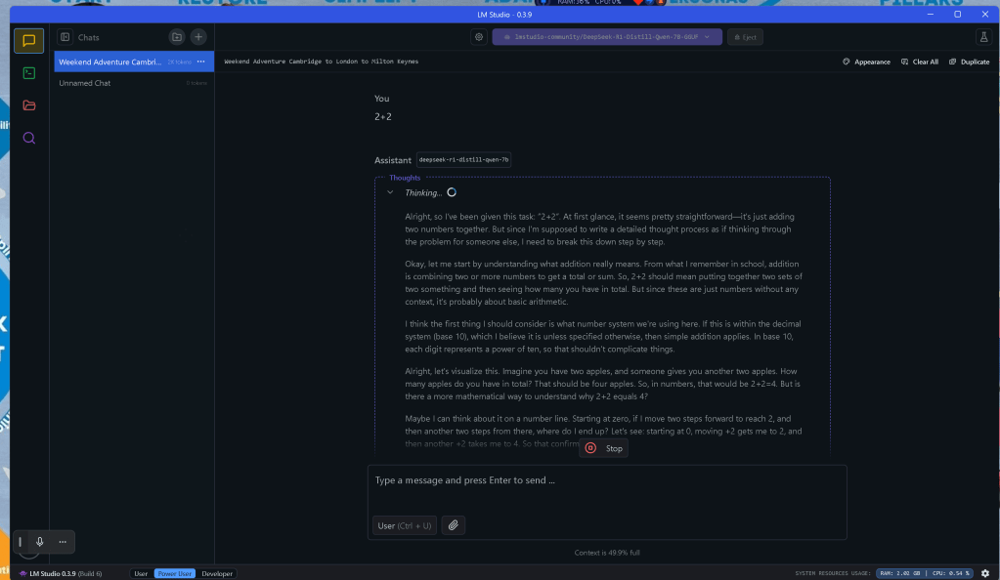
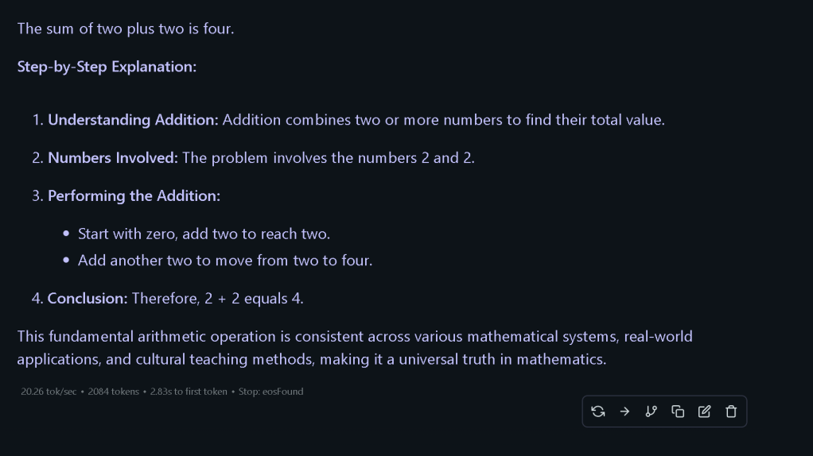

Spektrum and LLMS

Alright, so I’ve been given this task: “2+2”. At first glance, it seems pretty straightforward—it's just adding two numbers together. But since I'm supposed to write a detailed thought process as if thinking through the problem for someone else, I need to break this down step by step.
Okay, let me start by understanding what addition really means. From what I remember in school, addition is combining two or more numbers to get a total or sum. So, 2+2 should mean putting together two sets of two something and then seeing how many you have in total. But since these are just numbers without any context, it's probably about basic arithmetic.
I think the first thing I should consider is what number system we're using here. If this is within the decimal system (base 10), which I believe it is unless specified otherwise, then simple addition applies. In base 10, each digit represents a power of ten, so that shouldn't complicate things.
Alright, let's visualize this. Imagine you have two apples, and someone gives you another two apples. How many apples do you have in total? That should be four apples. So, in numbers, that would be 2+2=4. But is there a more mathematical way to understand why 2+2 equals 4?
Maybe I can think about it on a number line. Starting at zero, if I move two steps forward to reach 2, and then another two steps from there, where do I end up? Let's see: starting at 0, moving +2 gets me to 2, and then another +2 takes me to 4. So that confirms it.
But wait, is this always the case? What if we're in a different number system? For example, what if we're adding in binary (base 2)? In binary, numbers are represented using only two digits: 0 and 1. So, let's see how addition works there.
In binary:
0 + 0 = 0
0 + 1 = 1
1 + 0 = 1
1 + 1 = 10 (which is equal to 2 in decimal)
So, if we're adding two and two in binary, what does that look like? Wait, actually representing numbers in different bases can be a bit confusing when you mix them up. Maybe it's better to stick with the standard base 10 for simplicity unless specified otherwise.
Another way to think about addition is through the use of fingers. If I hold up two fingers on one hand and two on the other, how many fingers am I holding up in total? Four! That’s a practical demonstration of why 2+2 equals 4.
But what if we're dealing with vectors or more complex mathematical entities? For example, adding vectors isn't as simple as scalar addition because they have both magnitude and direction. But since the question is just “2+2”, I think it's safe to assume that these are scalar quantities.
Let me consider some real-life examples beyond apples:
If it takes two hours to complete a task and you do it twice, how much time have you spent? That would be 4 hours.
If you save
2
t
h
i
s
w
e
e
k
a
n
d
2thisweekand2 next week, your total savings are $4.
These examples reinforce the basic concept that adding two quantities of two gives four in various contexts.
I also think about money. If I have two dollars in one wallet and two dollars in another, how much do I have altogether? Four dollars! That’s consistent with what we've been discussing.
Maybe exploring this concept through technology or programming could help solidify the idea. For instance, in Python:
print(2 + 2)
Running this code would output 4, which aligns perfectly with our expectation.
But wait, is there a scenario where two plus two doesn't equal four? Well, certainly:
In modulo arithmetic, such as modulo 3: (2+2) mod 3 = 1
Or in some algebraic structures like rings or fields where the rules of addition are defined differently.
However, without any specific context given for this problem, we can safely assume standard base 10 arithmetic, making 2+2 equal to four.
Another angle to consider is set theory. If I have a set with two elements and another set with two elements, and they don't share any common elements (they're disjoint sets), the union of these sets would contain four unique elements in total. That's consistent with our basic addition principle.
Also, thinking about binary representations: 2 in decimal is '10' in binary. So adding two numbers:
10
+ 10
----
100
Which equals 4 in decimal ('100'). Again, this aligns with our understanding that 2 + 2 = 4.
Perhaps exploring fractions could offer a different perspective: if you have half of something twice and another half of something else twice, but that complicates things beyond the scope needed for this problem.
In geometry, adding two line segments of length two each would result in a single line segment four units long. Similarly, combining areas—two squares with area two each—if they're combined without overlapping, their total area would be four.
I suppose another way to think about addition is through repeated counting. If I count up from zero: 0 (zero), then add one to get to one, add another to get two, and so on until I reach the sum of numbers being added. But for adding two and two specifically:
Start at zero
Add two: now we're at two
Add another two: now we move up by two more to arrive at four
This step-by-step approach demonstrates how addition builds upon itself incrementally.
Moreover, considering the properties of addition:
Commutative: 2 + 2 = 2 + 2 (order doesn't matter)
Associative: (2) + (2) = same as any other grouping
Identity element: Adding zero to a number leaves it unchanged
These properties underpin why, regardless of how you approach the addition, 2+2 consistently equals four.
Thinking about physics, if two forces of magnitude two newtons act in the same direction on an object, the resultant force would be four newtons. Similarly, in electrical terms, combining two resistors in parallel or series with specific values could yield a total resistance of four ohms under certain conditions.
In cooking or baking, measuring ingredients requires precise quantities. If a recipe calls for two cups of flour and you need to double it, you’d use four cups. This practical application underscores the importance of accurate addition in everyday tasks.
Considering time management: if a project requires two weeks of work completed twice, the total time needed would be eight weeks—but this is an extension beyond our current problem’s scope.
Another interesting aspect is that in many languages and numeral systems around the world, the word for four often has significance similar to "two plus two." This linguistic connection provides another layer to understand why 2+2 equals four across different cultures and educational systems.
In terms of technology support or calculators: using a basic calculator, inputting 2 + 2 = would directly display 4. More advanced computational tools like spreadsheets or programming languages also handle this operation seamlessly.
Looking at the financial aspect, if an investment grows by two percent one year and another two percent the next year, assuming simple interest, the total growth after two years would be four percent. However, with compound interest, it’d actually grow to more than four percent because of the interest on the interest. But for our basic addition here, we're just dealing with 2+2=4.
In sports or games: scoring two points in a game and then another two points results in a total score of four—be it basketball, football, or any other sport that uses points incrementally.
Reflecting on this problem from multiple perspectives—mathematical, real-world applications, technology, language—it consistently leads to the conclusion that 2+2 equals four. This reinforces our understanding and makes it easier to apply in various contexts.
One thing I'm curious about is how different cultures teach addition. Are there unique methods or tools they use to help children grasp this concept? Maybe visual aids like abacuses, number lines, or counting beads are common across many educational systems worldwide.
Also, considering the historical development of numbers and arithmetic: the concept of adding two numbers likely emerged from practical needs such as trade, agriculture, and daily life. As societies evolved, these basic mathematical operations became standardized for easier communication and record-keeping.
In a broader sense, understanding that 2+2=4 is fundamental to more complex mathematics like algebra, geometry, calculus, etc., where the principles of addition are extended and applied in various ways.
Lastly, thinking about potential exceptions or edge cases: in most standard arithmetic systems, two plus two will always equal four. However, as previously mentioned, in different mathematical structures or under specific conditions (like modulo operations), this might not hold true.
In summary, after considering multiple angles—mathematical principles, real-life applications, cultural perspectives, technological tools, and even language—all point to the consistent conclusion that 2+2 equals four. This universality makes addition a fundamental building block in mathematics, essential for more advanced studies.

Imported from rifaterdemsahin.com · 2025